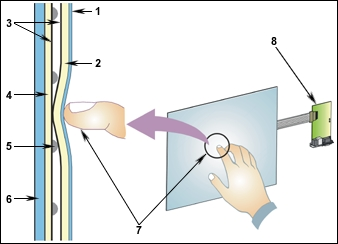
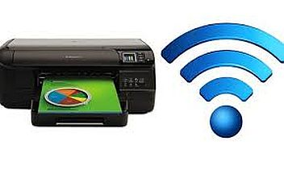
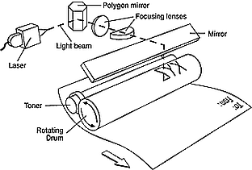
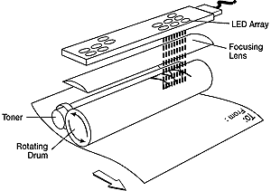
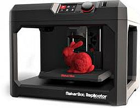
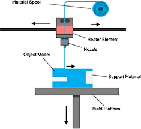

All keyboards today use a USB connection. Wireless keyboards use a USB transceiver. Even midi music keyboards use USB these days.
Old keyboards used to plug into either a DB-6 serial port, a 5-pin DIN "AT connector", or a 6-pin mini-DIN "PS/2" connector.
Key names
-
: = colon
; = semi colon
\ = backslash
/ = forwardslash
| = pipe (shift + \)
~ = tilde
[ ] = brackets
{} = curly brackets or braces
_ = underscore (shift + hyphen)
@ = ampersand
# = hash or pound
^ = karat
() = parenthesis
Mouse
It is called a mouse because it used to sort of resemble one, with the cord as the mouse's tail. Old mice used to use a ball at the bottom to roll around on. Now they use a laser and optic sensors or trackballs to determine movement, they are often wireless.
Other input devices like touch pads, touch screens and motion sensors compete with the mouse. But like all external devices, most mice use USB (some use blue tooth). They used to use a PS/2 or DB-9 serial port.
Touchpad / Drawing Tablet
A touchpad is an input device that translates the motion of fingers on a surface into relative position of the cursor on the screen. The two most commonly used methods of touchpads are CONDUCTIVE and CAPACITIVE sensing.
In conductive sensing there are two layers of grids used. One layer has horizontal set of wires and the other layer has a vertical set of wires. There is a low conductivity material between the wire intersections so that electricity does not flow between the wires. When the touchpad is pressed at a point, the material gets thinner between the wires, allowing the flow of electricity. Then the coordinates of point of contact is determined.
Capacitive sensors detect anything which is conductive or has dielectric properties. Our body has the conductive properties, hence it works. This is not the case when you use a pencil. The capacitive sensitive touchpad has two parts; ground and sensor. When the finger is brought close to the touch pad, then capacitance of the system increases. From the position of capacitors which are charging and discharging at any point of time, the coordinates of point of touch is determined.
Pointing Stick / Track Point
Also called a pointing stick, style pointer, or nub, TrackPoint is a mouse solution used with portable computers that was first introduced by IBM in 1992. It is a small, isometric joystick that resembles a pencil's eraser head, located between the "G," "H," and "B" keys on the keyboard.
Touchscreen

Resistive touch screens are the most basic and common touch screens, the ones used at ATMs and supermarkets, that require an electronic signature with that small grey pen. These screens literally “resist” your touch; if you press hard enough you can feel the screen bend slightly. This is what makes resistive screens work – two electrically conductive layers bending to touch one another.

Capacitive touch screens work with anything that holds an electrical charge including human skin. They are constructed from materials like copper or indium tin oxide that store electrical charges in an electrostatic grid of tiny wires, each smaller than a human hair.
Kinect
Kinect is a line of motion sensing input devices that was produced by Microsoft in 2009 for Xbox game consoles and Windows PCs. Based around a webcam-style add-on peripheral, it is a user interface using gestures and spoken commands.
A similar hardware version Kinect for Windows was released on February 1, 2012. The 1.0 version of the Windows SDK, allowing commercial applications, was released with and required the Kinect for Windows hardware.
Virtual Reality Headset
1. Lenses
Establishing a focal point is critical to perceiving depth. “You’re looking at a virtual image plane in each eye,” says Patel. In essence, the user’s eyes are staring beyond the display and into the virtual environment.
2. Display
A high-resolution screen that sits just a few inches from a user’s eyes projects a stereoscopic image—or two warped images on each half of the screen. “We’re just using the normal way that humans use binocular vision to perceive depth,” Patel says. “There are horizontal offsets between objects visible in the left and right eyes, which the visual cortex can process to perceive depth.” In other words, when the warped 2-D images are viewed in close proximity, users are tricked into believing they’re standing in a virtual world.
3.Tracking Technology
The headset comes equipped with more than a dozen sensor inputs. For example, a gyroscope, accelerometer, and compass track the location of a user’s head. Designers also added external infra-red sensors and a camera to increase positional accuracy and monitoring. Software running on a nearby host PC analyzes that data and renders images of a virtual world that adapt to head position.
4. 3D Audio
To be fully immersive, you need great sound, and Oculus has some of the most spatially accurate. You need to simulate two microphones in the game, and you can simulate audio in the real world. But the truth is that the software is slightly more sophisticated. “We can generate a good approximation of what each ear should hear at its location in virtual space, which is much better than what you could do with a typical surround-sound setup.”
MFP multi-function product/printer/peripheral, all-in-one (AIO), or multi-function device (MFD), incorporates the functionality of multiple devices in one, so as to have a smaller footprint and provide centralized document management/distribution/production.
  
A typical MFP may act as a combination of some or all of the following devices: Email, Fax, Photocopier, Printer, Scanner. Some of them are stand alone servers and some attach to a system wirelessly or with a USB cable.
Printing is often done with Inkjet, Laser, or LED hardware. They all use different or multiple page description languages (PDLs) like PostScript, PCL, XPS, and direct interpreters like PDF, TIFF. Some can do duplex printing and scanning, using both sides of the page.
A flatbed scanner is usually composed of a glass pane (or platen), under which there is a bright light (often xenon, LED or cold cathode fluorescent) which illuminates the pane, and a moving optical array in CCD scanning. CCD-type scanners typically contain three rows (arrays) of sensors with red, green, and blue filters.
Flatbed scanners are sometimes called a reflective scanners because they works by shining white light onto the object to be scanned and reading the intensity and color of light that is reflected from it, usually a line at a time. They are designed for scanning prints or other flat, opaque materials.
3D Printer
 
3D printing is any of various processes in which material is joined or solidified under computer control to create a three-dimensional object, with material being added together (such as liquid molecules or powder grains being fused together). 3D printing is used in both rapid prototyping and additive manufacturing.
Objects can be of almost any shape or geometry and typically are produced using digital model data from a 3D model or another electronic data source such as an Additive Manufacturing File (AMF) file (usually in sequential layers).
There are many different technologies, like stereolithography (SLA) or fused deposit modeling (FDM). Thus, unlike material removed from a stock in the conventional machining process, 3D printing or Additive Manufacturing builds a three-dimensional object from a computer-aided design (CAD) model or AMF file, usually by successively adding material layer by layer.